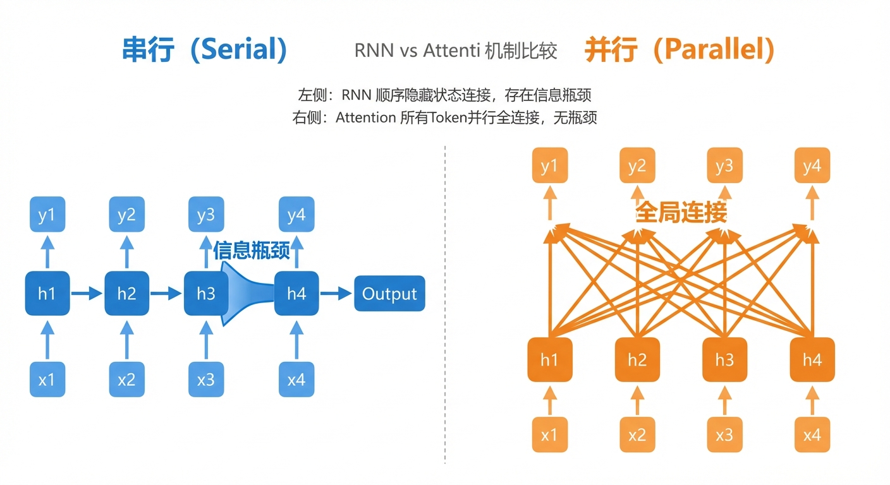
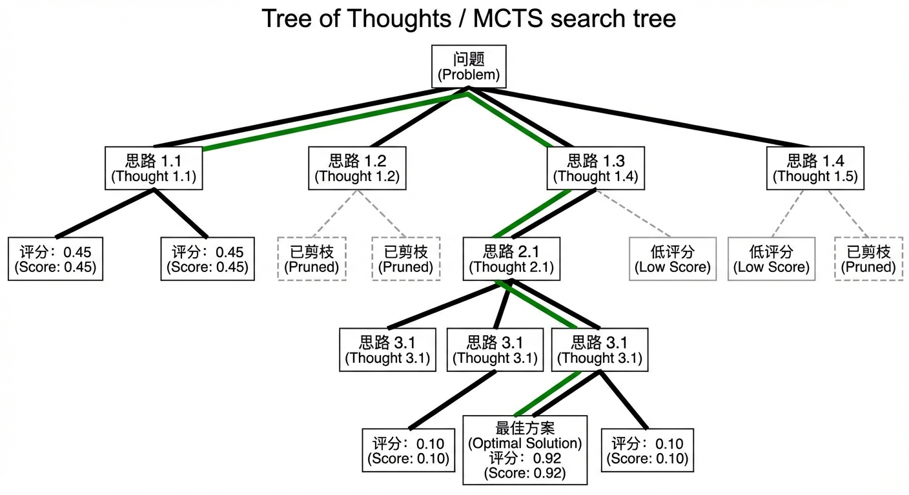

今日路线图
从序列模型到 Attention

Self-Attention 机制
核心公式：
- Q (Query): 当前 token 想了解什么
- K (Key): 每个 token 能提供什么信息
- V (Value): 每个 token 的实际内容
- $\sqrt{d_k}$ 缩放防止 softmax 饱和
Multi-Head Attention
为什么不只用一个 Attention？
- 每个 Head 学习不同的注意力模式
- Head 1 可能关注语法关系
- Head 2 可能关注语义相似性
- Head 3 可能关注位置关系...
LLaMA-2-7B: 32 heads, $d_{model}=4096$, $d_{head}=128$
Transformer Decoder Block
自回归生成 (Autoregressive Generation)
核心思想：逐 token 生成，每次根据已有内容预测下一个
- $x$ = 输入 prompt
- $y_{\lt t}$ = 已生成的 tokens
- $h_t$ = Decoder 最后一层的隐状态
- 每次只生成一个 token，追加后继续
- 遇到
[EOS]或达到长度上限时停止
生成 1000 个 token 需要跑 1000 次前向传播！
Prefill vs Decode：推理的两个阶段
KV Cache：避免重复计算
KV Cache 占多少显存？
| 参数 | 含义 | LLaMA-2-7B |
|---|---|---|
| $n_{\text{layers}}$ | 层数 | 32 |
| $n_{\text{heads}} \times d_{\text{head}}$ | 注意力维度 | 4096 |
| $S$ | 序列长度 | 变量 |
| bytes | 精度 (FP16) | 2 |
LLaMA-2-7B, $S=4096$:
$M = 2 \times 32 \times 4096 \times 4096 \times 2$ $= 2\,\mathrm{GB}$

（图表由 Python 生成。模型参数来自 Touvron et al. 2023 / HuggingFace LlamaConfig）
推理延迟分解
- TTFT (Time To First Token) $= T_{\text{prefill}}$
用户发 prompt 到看到第一个 token 的时间
- TPOT (Time Per Output Token) $= T_{\text{decode}}$
每生成一个 token 的平均时间
对于长生成（$N$ 大），Decode 阶段 dominates，因为 Decode 是 memory-bound（受限于显存带宽）

（图表由 Python 生成，延迟值基于 LLaMA-2-7B FP16 在 A100 上的典型推理延迟）
LLM 推理全流程：从输入到输出
Part 1 小结
- Attention: $QK^T/\sqrt{d_k} \cdot V$
- 自回归: 逐 token 生成
- KV Cache: 避免重复计算
- Prefill $=$ Compute-bound
- Decode $=$ Memory-bound
- 长生成时 Decode dominates
了解了推理流程和瓶颈，接下来看如何加速 → Part 2
推理瓶颈：Memory-bound vs Compute-bound
- Memory-bound: 算术强度低，GPU 等待数据
→ Decode 阶段的 Attention 计算
- Compute-bound: 算术强度高，GPU 算力饱和
→ Prefill 阶段的大矩阵乘法
LLM 推理的瓶颈在 Decode 阶段的内存带宽，不是算力。加速的关键：减少访存量或提高访存效率。

Roofline Model（图表由 Python 生成。硬件参数参考 NVIDIA A100 80GB SXM4 规格：HBM 带宽 2039 GB/s，FP16 Tensor Core 312 TFLOPS）
Speculative Decoding（投机解码）
Speculative Decoding：为什么结果等价？
目标：证明用 Speculative Decoding 采样的 token 分布与直接从大模型 $p$ 采样完全一致。
$p$ = 大模型概率，$q$ = 小模型概率
如果 $p(x) \geq q(x)$：必接受
如果 $p(x) < q(x)$：以 $p(x)/q(x)$ 的概率接受
只从 $p > q$ 的区域重新采样
保证最终分布为 $p$
最终采样分布：
若小模型与大模型平均接受率 $\alpha$，draft 长度 $K$，则期望每步输出 token 数：$\frac{1}{1-\alpha}$ 倍
Speculative Decoding：加速比分析

（图表由 Python 生成，基于理论加速比模型，$c{=}0.1$ 为小模型相对大模型的前向传播时间比）
- 加速比取决于 接受率 $\alpha$ 和 Draft 长度 $K$
- $\alpha = 0.9,\ K = 5$ → ~3× 加速
- $\alpha$ 越高（draft 越准确），加速越明显
- $K$ 太大收益递减（$\alpha^k$ 快速衰减）
通常 $K \in [4, 7]$，选择与 target 同系列的 small draft model 可获得 $\alpha > 0.9$。
关键约束：不改变输出分布（数学等价性保证）。
模型量化 (Quantization)
用更少位数表示模型权重，牺牲少量精度换取：
- 减少显存：$\text{FP16}\to\text{INT4}$，模型体积缩小 $4\times$
- 加速推理：更小的数据 $\to$ 更少的访存
- 更大 batch：省下的显存可服务更多请求
| 精度 | 每参数字节 | 7B 模型大小 | 质量损失 |
|---|---|---|---|
| FP16 | 2 B | 14 GB | — |
| INT8 | 1 B | 7 GB | 极小 |
| INT4 | 0.5 B | 3.5 GB | 小 |
GPTQ：逐层最优量化
问题：直接四舍五入会累积误差。GPTQ 的思路：
- 不是单独量化每个权重，而是考虑整层输出误差
- 利用 Hessian 矩阵 $H = 2XX^T$ 指导量化
- 逐列量化权重，同时调整未量化的列来补偿误差
- 只需少量校准数据（~128 条）
Simple RTN: round-to-nearest，忽略层间关系
GPTQ: 考虑权重间的相关性，量化后层输出更接近原始
AWQ (Activation-aware): 基于激活值重要性保护关键权重通道
GGUF: 支持 CPU 推理的量化格式，可在笔记本上运行 LLM
SmoothQuant: 将激活值的量化难度迁移到权重上
INT4 量化通常损失 < 1% 精度
推荐：GPTQ/AWQ 用于 GPU，GGUF 用于 CPU
Flash Attention：分块计算
PagedAttention & 分布式推理
PagedAttention (vLLM):
- KV Cache 分成固定大小的页/块
- 像 OS 虚拟内存一样管理
- 消除显存碎片
- 支持 KV Cache 共享（prefix caching）
Tensor Parallelism:
- 每层权重切分到多张 GPU
- $70\text{B}$ 模型：$4\times$ A100 ($80\,\mathrm{GB}$)
- 通信开销：All-Reduce 操作
推理加速技术全景

Part 2 小结
- Speculative Decoding: 小模型帮大模型
- 量化: 更低位数 $=$ 更少访存
- Flash Attention: 分块避免 $O(N^2)$
- PagedAttention: 分页管理 KV Cache
- 推理瓶颈在 内存带宽
- 所有优化都在减少访存
- 或提高访存效率
- 结果不变（等价性证明）
单次推理变快后，能否用更多推理计算提升效果？ → Part 3
两种 Scaling 范式

训练 Scaling（更大模型）vs 推理 Scaling（更多思考）— 两种提升性能的方式
Chain-of-Thought (CoT)
Q: 一个餐厅有 23 张桌子。每张桌子有 4 把椅子。今天午餐时有 14 张桌子坐了 3 人，5 张桌子坐了 4 人，其余空着。餐厅里有多少人？
A: 62 人
（一步跳到答案，容易出错）
Q: （同上）
A: 让我一步步来：
1) $14 \times 3 = 42$ 人
2) $5 \times 4 = 20$ 人
3) 其余 $23-14-5=4$ 张桌子空着
4) 总人数 $=42+20=62$ 人
CoT 为什么有效？— 数学直觉
直接回答 vs 分步推理：
- $q$ = 问题，$a$ = 答案，$c$ = 中间推理步骤
- 直接回答需要模型一步映射 $q \to a$
- CoT 引入中间变量 $c$，将一步分解为多步
- 每步更简单 $\to$ 出错概率更低
CoT 等价于增加神经网络的"计算深度"。更深的网络能表达更复杂的函数。每个推理步骤 $\approx$ 网络多一层。
Self-Consistency：多次采样 + 多数投票
Self-Consistency：投票效果分析

（图表由 Python 生成，基于二项分布模型。$p{=}0.57$ 参考 LLaMA-2-70B 在 GSM8K 上的 8-shot CoT 表现，Touvron et al. 2023）
- 单次推理准确率 $p = 57\%$（LLaMA-2-70B, GSM8K）
- $N=5$: $\sim 63\%$ $N=11$: $\sim 68\%$
- $N=21$: $\sim 74\%$ $N=41$: $\sim 82\%$
- 边际收益递减，但持续提升
更多采样 $\times$ 投票 = 更可靠答案。
计算量翻倍 → 准确率持续提升，但存在收益递减。
Best-of-N & Process Reward Model
Best-of-N：
- 生成 N 个候选解法
- 用 Reward Model 打分
- 选分数最高的
Process Reward Model (PRM):
- 不只评估最终答案
- 评估每一步推理的质量
- 可以定位出错的步骤
- OpenAI o1 的核心技术之一
Tree of Thoughts & MCTS

从线性思考到树状搜索：
- CoT: 一条推理路径
- ToT: 多条分支 + 回溯
- MCTS: AlphaGo 式搜索
- $\bar{X}_j$ = 节点 $j$ 的平均奖励
- $N$ = 父节点访问次数
- $n_j$ = 节点 $j$ 的访问次数
- $c$ = 探索-利用平衡系数
UCB 保证：探索未知路径 + 利用已知好路径
OpenAI o1/o3：Test-Time Compute 的工业实践
- 训练模型"学会思考"（强化学习训练推理策略）
- 推理时自动进行多步推理 + 自我验证
- 内置 hidden CoT（思考过程对用户不可见）
- 在数学/编程/科学推理上大幅超越 GPT-4
- 不是让模型更大，而是让模型思考更久
- 推理计算量可动态调整（简单问题少想，难题多想）
- o3 在 ARC-AGI 基准上达到人类水平
- 验证了 inference-time scaling 的有效性
o1/o3 证明：推理时的计算扩展是提升 LLM 能力的新维度，与模型规模扩展互补。
Inference Scaling Laws
核心发现：
- 推理计算量与性能呈对数线性关系
- 与训练 scaling law 形式类似（$\text{Loss} \propto \log(\text{Compute})$）
- 小模型 + 更多推理计算 可以匹配大模型的性能
- 存在"计算最优"的分配策略
不一定需要训练更大的模型。对于单个困难问题，增加推理计算（更多采样、搜索）可以显著提升准确率。

（定性示意图，趋势参考 Snell et al. "Scaling LLM Test-Time Compute" 2024，具体数值为模拟）
全课总结

Part 1: 推理基础 — 理解推理流程和瓶颈 (Transformer, 自回归, KV Cache)
Part 2: 推理加速 — 优化推理效率 (Speculative Decoding, 量化, Flash Attention)
Part 3: 推理扩展 — 扩展推理计算 (CoT, Self-Consistency, MCTS, Scaling Laws)
Q&A 欢迎提问